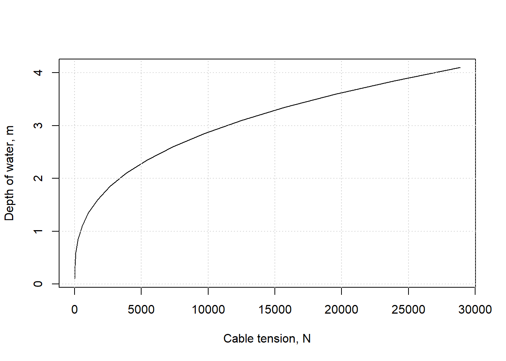

Chapter 3 Hydrostatics - forces exerted by water bodies
When water is motionless its weight exerts a pressure on surfaces with which it is in contact. The force is function of the density of the fluid and the depth.
Figure 3.1: The Clywedog dam by Nigel Brown, CC BY-SA 2.0, via Wikimedia Commons
3.1 Pressure and force
A consideration of all of the forces acting on a particle in a fluid in equilibrium produces Equation (3.1). \[\begin{equation} \frac{dp}{dz}=-{\gamma} \tag{3.1} \end{equation}\] where \(p\) is pressure (\(p=F/A\)), \(z\) is height measured upward from a datum, and \({\gamma}\) is the specific weight of the fluid (\(\gamma={\rho}g\)). Rewritten using depth (downward from the water surface), \(h\), produces Equation (3.2). \[\begin{equation} h=\frac{p}{\gamma} \tag{3.2} \end{equation}\]
Example 3.1 Find the force on the bottom of a 0.4 m diameter barrel filled with (20 \(^\circ\)C) water for barrel heights from 0.5 m to 1.5 m.

area <- pi/4*0.4^2
gamma <- hydraulics::specwt(T = 20, units = 'SI')
heights <- seq(from=0.5, to=1.5, by=0.05)
pressures <- gamma * heights
forces <- pressures * area
plot(forces,heights, xlab="Total force on barrel bottom, N", ylab="Depth of water, m", type="l")
grid()Figure 3.2: Force on barrel bottom.
The linear relationship is what was expected.
3.2 Force on a plane area
For a submerged flat surface, the magnitude of the hydrostatic force can be found using Equation (3.3). \[\begin{equation} F={\gamma}y_c\sin{\theta}A={\gamma}h_cA \tag{3.3} \end{equation}\]
The force is located as defined by Equation (3.4). \[\begin{equation} y_p=y_c+\frac{I_c}{y_cA} \tag{3.4} \end{equation}\]
The variables correspond to the definitions in Figure 3.3.Figure 3.3: Forces on a plane area, by Ertunc, CC BY-SA 4.0, via Wikimedia Commons
Figure 3.4: Centroids and moments of inertia for common shapes
Example 3.2 A 6 m long hinged gate with a width of 1 m (into the paper) is at an angle of 60o and is held in place by a horizontal cable. Plot the tension in the cable, \(T\), as the water depth, \(h\), varies from 0.1 to 4 m in depth. Ignore the weight of the gate.
Figure 3.5: Reservoir with hinged gate (Olivier Cleyne, CC0 license, via Wikimedia Commons)
The surface area of the gate that is wetted is \(A=L{\cdot}w=\frac{h{\cdot}w}{\sin(60)}\). The wetted area is rectangular, so \(h_c=\frac{h}{2}\). The magnitude of the force uses (3.3): \[F={\gamma}h_cA={\gamma}\frac{h}{2}\frac{h{\cdot}w}{\sin(60)}\]
The distance along the plane from the water surface to the centroid of the wetted area is \(y_c=\frac{1}{2}\frac{h}{\sin(60)}\). The moment of inertia for the rectangular wetted area is \(I_c=\frac{1}{12}w\left(\frac{h}{\sin(60)}\right)^3\).
Taking moments about the hinge at the bottom of the gate yields \(T{\cdot}6\sin(60)-F{\cdot}\left(\frac{h}{\sin(60)}-y_p\right)=0\) or \(T=\frac{F}{6\cdot\sin(60)}\left(\frac{h}{\sin(60)}-y_p\right)\)
These equations can be used in R to create the desired plot.
gate_length <- 6.0
w <- 1.0
theta <- 60*pi/180 #convert angle to radians
h <- seq(from=0.1, to=4.1, by=0.25)
gamma <- hydraulics::specwt(T = 20, units = 'SI')
area <- h*w/sin(theta)
hc <- h/2
Force <- gamma*hc*area
yc <- (1/2)*h/(sin(theta))
Ic <- (1/12)*w*(h/sin(theta))^3
yp <- yc + (Ic/(yc*area))
Tension <- Force/(gate_length*sin(theta)) * (h/sin(theta) - yp)
plot(Tension,h, xlab="Cable tension, N", ylab="Depth of water, m", type="l")
grid()
3.3 Forces on curved surfaces
For forces on curved surfaces, the procedure is often to calculate the vertical, \(F_V\), and horizontal, \(F_H\), hydrostatic forces separately. \(F_H\) is simpler, since it is the horizontal force on a (plane) vertical projection of the submerged surface, so the methods of Section 3.2 apply.
The vertical component, \(F_V\), for a submerged surface with water above has a magnitude of the weight of the water above it, which acts through the center of volume. For a curved surface with water below it the magnitude of \(F_V\) is the volume of the ‘mising’ water that would be above it, and the force acts upward.
Figure 3.6: Forces on curved surfaces, by Ertunc, CC BY-SA 4.0, via Wikimedia Commons
Figure 3.7: Radial gates on the Rogue River, OR.
To simplify the geometry, a problem is presented in Example 3.3 where the gate meets the base at a horizontal angle.
Example 3.3 A radial gate with radius R=6 m and a width of 1 m (into the paper) controls water. Find the horizontal and vertical hydrostatic forces for depths, \(h\), from 0 to 6 m.
The horizontal hydrostatic force is that acting on a rectangle of height \(h\) and width \(w\): \[F_H=\frac{1}{2}{\gamma}h^2w\] which acts at a height of \(y_c=\frac{h}{3}\) from the bottom of the gate.
The vertical component has a magnitude equal to the weight of the ‘missing’ water indicated on the sketch. The calculation of its volume requires the area of a circular sector minus the area of a triangle above it. The angle, \(\theta\) is found using geometry to be \({\theta}=cos^{-1}\left(\frac{R-h}{R}\right)\). Using the equations for areas of these two components as in Figure 3.4, the following is obtained: \[F_V={\gamma}w\left(\frac{R^2\theta}{2}-\frac{R-h}{2}R\sin{\theta}\right)\]
The line of action of \(F_V\) can be determined by combining the components for centroids of the composite shapes, again following Figure 3.4. Because the line of action of the resultant force on a curcular gate must pass through the center of the circle (since hydrostatic forces always act normal to the gate), the moments about the hinge of \(F_H\) and \(F_V\) must equal zero. \[\sum{M}_{hinge}=0=F_H\left(R-h/3\right)-F_V{\cdot}x_c\] This produces the equation: \[x_c=\frac{F_H\left(R-h/3\right)}{F_V}\] These equations can be solved in many ways, such as the following.
R <- units::set_units(6.0, m)
w <- units::set_units(1.0, m)
gamma <- hydraulics::specwt(T = 20, units = 'SI', ret_units = TRUE)
h <- units::set_units(seq(from=0, to=6, by=1), m)
#angle in radians throughout, units not needed
theta <- units::drop_units(acos((R-h)/R))
area <- h*w/sin(theta)
Fh <- (1/2)*gamma*h^2*w
yc <- h/3
Fv <- gamma*w*((R^2*theta)/2 - ((R-h)/2) * R*sin(theta))
xc <- Fh*(R-h/3)/Fv
Ftotal <- sqrt(Fh^2+Fv^2)
tibble::tibble(h=h, Fh=Fh, yc=yc, Fv=Fv, xc=xc, Ftotal=Ftotal)
#> # A tibble: 7 × 6
#> h Fh yc Fv xc Ftotal
#> [m] [N] [m] [N] [m] [N]
#> 1 0 0 0 0 NaN 0
#> 2 1 4896. 0.333 22041. 1.26 22578.
#> 3 2 19585. 0.667 60665. 1.72 63748.
#> 4 3 44067. 1 108261. 2.04 116886.
#> 5 4 78341. 1.33 161583. 2.26 179573.
#> 6 5 122408. 1.67 218398. 2.43 250363.
#> 7 6 176268. 2 276881. 2.55 328228.